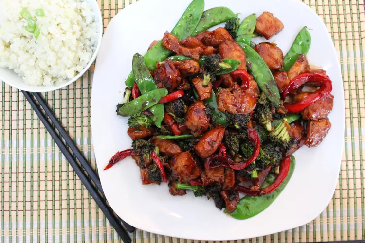

Teriyaki Chicken Stir-Fry
back to home

Teriyaki Chicken Stir-Fry
This teriyaki chicken stir-fry is something to make when you just don't know what to cook.
Ingredients
- ½ cup teriyaki marinade (such as Kikkoman®)
- 1 tablespoon soy sauce
- 1 teaspoon minced fresh ginger
- 1 teaspoon brown sugar
- ¼ teaspoon red pepper flakes
- ⅛ teaspoon black peppere
- 1 pound boneless, skinless chicken breast halves, cut into 1-inch cubes
- 1 bunch scallions, sliced1 bunch scallions, sliced
- 2 cloves garlic, minced
- 1 tablespoon sesame oil
- 1 bunch broccoli, cut into florets
- 1 cup snow peas, halved
- 1 medium red bell pepper, diced
- ½ cup stir-fry sauce (such as Kikkoman®)
Steps
- Whisk teriyaki marinade, soy sauce, ginger, brown sugar, red pepper flakes, and black pepper together in a large glass or ceramic bowl. Add chicken and toss to evenly coat. Cover the bowl with plastic wrap and marinate in the refrigerator for 5 hours.
- Heat a wok over medium-high heat. Add scallions, garlic, and oil; stir-fry for about 1 minute. Add broccoli, snow peas, and bell pepper; stir-fry for 2 minutes more. Add stir-fry sauce and mix until vegetables are coated.
- Remove chicken from the marinade and shake off excess. Discard the remaining marinade. Add chicken to the wok and stir-fry until chicken is no longer pink in the center and the juices run clear, about 5 minutes.
back to home